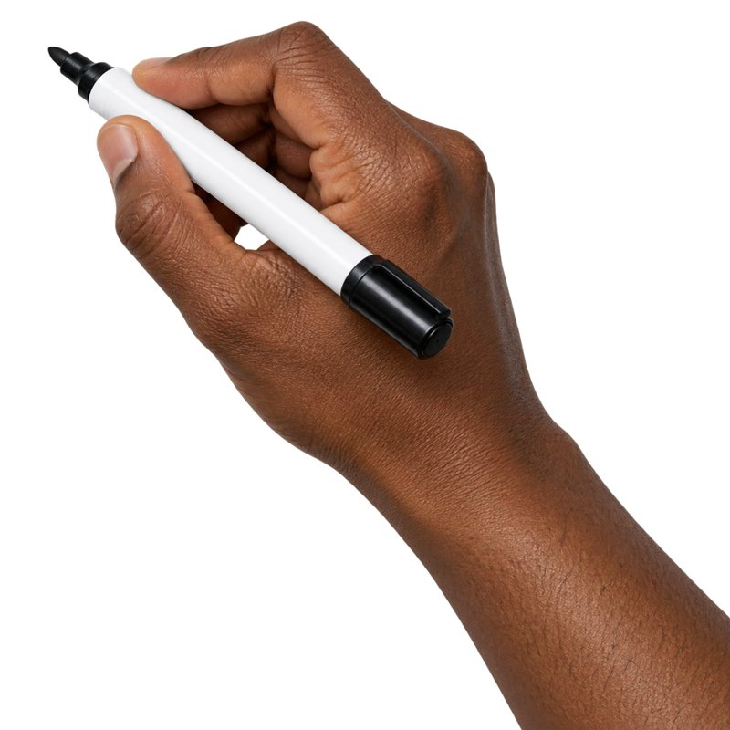
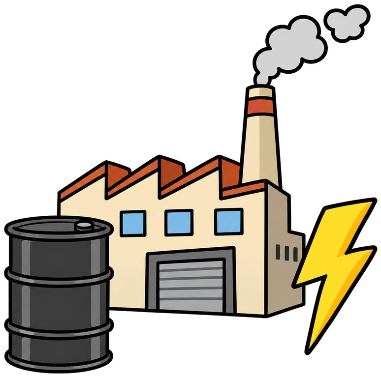
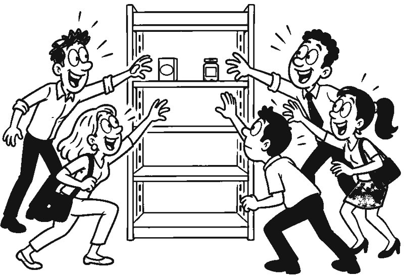
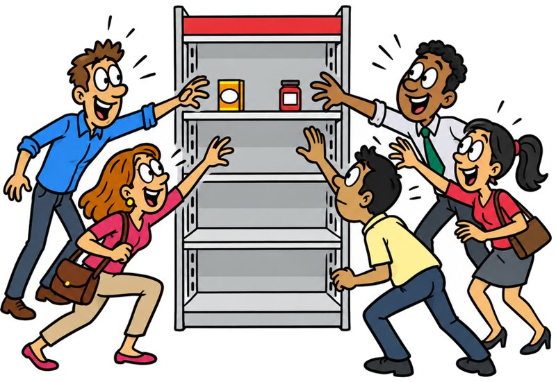

Ce que tu vas obtenir
L'exemple du guide, c'est « L'inflation en 60 secondes ». Une voix explique, et pendant qu'elle parle, une main dessine au feutre le pain qui coûte plus cher, la foule devant le rayon, l'usine, la tirelire. Chaque dessin arrive d'abord en traits noirs, puis la couleur se pose. Les mots importants s'écrivent à la main.
Ce style marche pour expliquer n'importe quoi : un concept, ton offre, une méthode, un chiffre. Le sujet est à toi.
Ce qu'il te faut
Claude
Un abonnement payant, avec l'exécution de code activée dans les réglages. C'est ce qui permet à Claude de fabriquer la vidéo.
ChatGPT
Pour dessiner la main et les illustrations, à partir des prompts que Claude te prépare.
Une voix
Ta propre voix enregistrée, ou une voix ElevenLabs avec son connecteur activé dans Claude.
Étape 1 · Coller le prompt de départ
Ouvre une nouvelle conversation dans Claude et colle ce prompt. Claude commence par te poser quelques questions : ton sujet, la durée, le format, la voix. Réponds simplement.
Étape 2 · Valider le script
Claude te propose un script découpé en scènes : ce que dit la voix, et ce qui se dessine à chaque phrase. Lis-le à voix haute. Si une phrase sonne faux ou si une idée manque, dis-le-lui maintenant : tout le reste en dépend.
Étape 3 · Générer les images dans ChatGPT
Une fois le script validé, Claude te donne la liste des images à créer, avec un prompt prêt à coller pour chacune : la main qui tient le feutre, puis une illustration par idée. Colle-les une par une dans ChatGPT, télécharge les images et renvoie-les toutes à Claude.


Si tu veux préparer tes images avant, voici les deux prompts qu'on a utilisés.
Étape 4 · La voix
Deux options. Tu enregistres le script toi-même sur ton téléphone et tu envoies l'audio à Claude. Ou, si le connecteur ElevenLabs est activé, Claude génère la voix lui-même : décris-lui simplement la voix que tu veux.
Étape 5 · Claude anime et monte
Avec les images et la voix, Claude fabrique la vidéo en code. Il tire les contours de chaque illustration, les fait apparaître trait par trait sous la pointe du feutre, puis pose la couleur. Les mots-clés s'écrivent à la main, au moment où la voix les prononce.


La première version est rarement parfaite. Regarde-la en entier, puis donne des retours précis, avec le moment concerné. Voici les phrases qui servent le plus :
Et pour n'importe quel autre style
Le prompt de départ décrit le style dessiné à la main, mais la méthode marche pour tous les styles. Tu as vu une vidéo dont tu aimes la façon de faire ? Commence par elle. Donne-la à Claude, ou quelques captures d'écran si la vidéo ne passe pas, et demande-lui d'analyser comment elle est construite. Il en tire les règles du style, et tu les utilises à la place des miennes dans le prompt de départ.
Chaîne ou communauté ?
Suivre les prochains kits, ou venir montrer ses essais et obtenir un retour.
La chaîne
Nouveaux kits, ressources, ateliers et annonces.
La communauté
Questions, retours, idées et corrections sur les tests.